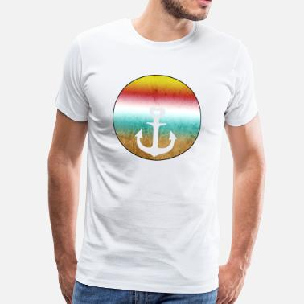

T-Léinte Daoine Fásta : Tóg go bog é. T-Léine
Logáil isteach Cláraigh This email address is being protected from spambots. You need JavaScript enabled to view it. +353 91 553 343 Gaeilge Gaeilge English ×
Logáil isteach
Ciseán folamh x Taispeáin an Ciseán Baile Nuacht Cé muid féin? Cá bhfuil muid ? Déan teagmháil linn Téarmaí seirbhíse T-Léinte & Léinte Polo Dúchas na hÉireann Mascanna Éadain Daoine Fásta T-Léinte Do na Mná Páistí Leanaí Óga Geansaithe & Seaicéid Seaicéid Dúchas na hÉireann Cochaill daoine Fásta Cochaill Do Pháistí Geansaithe Spraoi Do Pháistí T-Léinte Leanaí Óga Cochaill Bréagáin & Cluichí Cártaí Beannachta Cártaí Pósadh Cártaí Buíochais Ócáidí Speisialta Cártaí Lá Breithe Cártaí Linbh Nua Cártaí Eile Cártaí Nollag Teanga & Féiríní Foclóirí & Cúrsaí Bronntanais Ceol Spéisiúil Suaitheantais Cnaipe Greamáin Ghaeilge An Nollaig Tá tú anseo: Baile T-Léinte & Léinte Polo Daoine Fásta Tóg go bog é. T-Léine Back to: T-Léinte Daoine FástaTóg go bog é. T-Léine
Foclaíocht shimplí i stíl chomhaimsearthaCairt tomhais € 16.00
Cur Síos
Foclaíocht shimplí i stíl chomhaimseartha.
Ar T-Léinte.
Ar fáil freisin ar gheansaithe chochaill.
Earraí gaolmhara
Tóg go bog é. Cochall Tóg go bog é. T-Léine Luiteach Tóg go bog é!! Greamán fuinneoige Tóg go bog é! Suaitheantas CnaipeFéach ar léirmheasanna
Níl aon léirmheasanna don táirge seo.
Catagóirí
Cártaí Beannachta as Gaeilge Cártaí Buíochais Cártaí Eile Cártaí Lá Breithe Cártaí Linbh Nua Cártaí Nollag Cártaí Pósadh Ócáidí Speisialta Do Pháistí Bréagáin & Cluichí Cochaill Do Pháistí T-Léinte Do Leanaí Óga T-Léinte Do Pháistí Geansaithe, Cochaill & Seaicéid Cochaill Daoine Fásta Geansaithe & Cochaill Dúchas na hÉireann Geansaithe Spraoi Seaicéid T-Léinte Mascanna Éadain T-Léinte Daoine Fásta T-Léinte Do na Mná T-Léinte Dúchas na hÉireann Teanga & Cultúr Bronntanais Ceol Spéisiúil Foclóirí & Cúrsaí Greamáin Ghaeilge Suaitheantais Cnaipe Mascanna Éadain:
POSTAS SAOR IN AISCE
Clúdach Éadain 8. Beatha agus Sláinte € 8.50 Táirgí Randamacha
Super Gaeilgeoir. T-Léine € 16.00 Cárta. Breithlá 5 € 3.20An Spailpín Fánach Ceardlann an Spidéil, An Spidéal, Co. na Gaillimhe, Éire +353 91 553 343 siopa@spailpin.com
Eolas
Cé muid féin? - Cá bhfuil muid ? Déan teagmháil linn - Seirbhís d'ár gcustaiméirí Seachadadh, Íocaíocht, Téarmaí SeirbhíseDo chuntas
Logáil isteach Do chuntas Stair OrduitheFaigh Ár Nuachtlitir
© 2020 An Spailpín Fánach